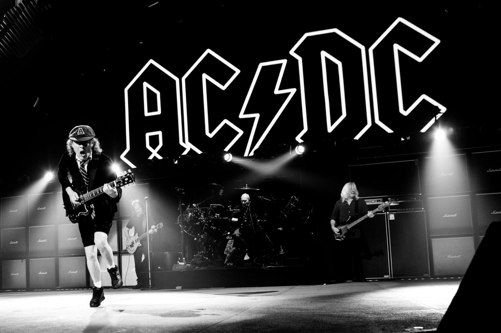

AC/DC este o trupã rock din Australia formatã în 1973 de fratii Malcolm si Angus Young. O trupã hard rock/blues rock, ei au mai fost considerati si o trupã heavy metal, desi ei întotdeauna si-au numit muzica simplu "rock and roll".
Malcolm si Angus erau singurii membri originali rãmasi în trupã. La câteva luni dupã începutul înregistrãrilor pentru albumul Highway to Hell, vocalistul si unul din compozitorii trupei, Bon Scott, a murit pe 19 februarie 1980 dupã o noapte de consum excesiv de alcool. Grupul se gândea la destrãmare, dar în urma sustinerii din partea pãrintilor lui Scott, au decis sã continue si sã gãseascã un nou vocalist. Fostul cântãret al trupei Geordie, Brian Johnson a sustinut auditii si a fost selectat sã-l înlocuiascã pe Scott. Mai târziu în acel an, trupa a lansat noul album, Back in Black, care era un tribut pentru Bon Scott. Albumul i-a adus pe noi culmi ale succesului si a devenit albumul trupei cu cele mai mari vânzãri din toate timpurile.
AC/DC a vândut mai bine de 200 de milioane de înregistrãri global, incluzând 71,5 milioane de albume doar în Statele Unite, adãugându-i la Lista artistilor cu cele mai mari vânzãri în Statele Unite si Lista artistilor cu cele mai mari vânzãri. Back in Black a vândut 50 de milioane de unitãti în lume, fãcându-l al cincilea cel mai bine vândut album al vreunui artist si al treilea cel mai bine vândut album al vreunei trupe. Albumul a vândut 22 de milioane de unitãti doar în SUA, unde este al saselea cel mai bine vândut album din toate timpurile. AC/DC s-a clasat pe locul 4 în lista VH1 "100 Greatest Artists of Hard Rock" si pe locul 7 în clasamentul MTV "Greatest Heavy Metal Band of All Time". În 2004, AC/DC au fost pe locul 72 în lista Rolling Stone "100 Greatest Artists of All Time". Producãtorul Rick Rubin, care a scris un eseu pe seama trupei pentru lista Rolling Stone, s-a referit la AC/DC drept "cea mai mare trupã rock and roll din toate timpurile." În 2010, AC/DC au fost clasati pe pozitia 23 în lista VH1 "100 Greatest Artists of All Time".
Pentru mai multe detalii puteti apasa aici